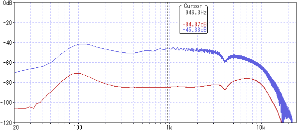

BOSS OD-1X OverDrive 修理・特性測定
2022年05月16日 カテゴリー：修理・改造・解析
ポットに不具合がある状態のBOSS OD-1X OverDriveを手に入れたので、修理し特性を測定しました。修理の過程でノブが変更となっています。
以前修理したBOSS ML-2は2007年発売、OD-1Xは2014年発売です。電源用ICのBD9851は同じですが、オーディオコーデックがAK4552からAK4556にグレードアップしています。また、ML-2ではLEVELコントロールがアナログ回路部分にありましたが、OD-1Xではデジタルプログラム上でのLEVELコントロールになっています。設計見直しやオーディオコーデックの性能アップにより充分低ノイズになったと判断されたということでしょう。
【修理】
症状を確認してみると、ポット内部の接触不良のためか、DRIVEの動きが不安定です。無理な力が加わった様子はないので、単純なポットの劣化なのかもしれません。
最初に手持ちのミニポットに交換したところ、ネジ部の長さが足りずナットがつけられませんでした。金属パネルが分厚いのでネジ部が6.5mm程度必要なのですが、シャフト全長15mmのミニポットはネジ部5mmが普通のようです。Tayda Electronicsでネジ部6.5mmのものを見つけたのですが、商品ページの誤表記でした（現在は訂正されています）。
OD-1Xのポットはたぶん特注で、ネジ部が長いのに加えてDシャフトの切り欠き位置が180度逆です。あきらめかけていましたが、ソリッドシャフトでネジ部6.5mmのものがGarrettaudioにありました。元々ついていたDシャフト用ノブは使えないので、雰囲気が近い別のメタルノブをついでに購入しました。
基本的にデジタルエフェクターのポットは単純な分圧の役割をしています（下図）。2番ピンの電圧をA/Dコンバータ (ADC)で読み取ると回転角がわかるという仕組みです。例えば、基準電圧が5Vで2番ピンの電圧が1Vだと、ポットの回転位置は20%となります。
ポットの抵抗値は、小さいと無駄な電流消費になってしまいます。大きすぎると、ノイズが入ったり、ADCの入力インピーダンスとの兼ね合いでカーブが直線的にならなくなったりすることが考えられます。
BOSSでは50kΩのポットが使われています。今回は50kΩのポットが終売だったので25kΩのものを購入し、念のため4つ全て交換しました。10kΩや100kΩでもまず大丈夫だと思います。ポット取付基板には、ノイズ除去用と思われるコンデンサが実装されているのが確認できます。
【特性測定】※各ノブの設定は最大を100として記載
BOSS公式サイトには、多次元的信号処理技術「MDP」を用いていると記載があり、複雑な信号処理が施されていると思われます。単純な特性測定ではあまり意味がないかもしれません。
▽波形・倍音（LOW 0 HIGH 0 DRIVE 50）
非対称な波形で、偶数次倍音が多いです。
▽DRIVE変化時の周波数特性（LOW 100 HIGH 100）

設定値0～100で約40dB変化します。ゲインを上げたとき低音域と高音域が少し下がるようになっているようです。
▽LOW変化時の周波数特性（HIGH 50 DRIVE 0）
100Hz付近を増幅する動きです。75あたりではやや幅広い増幅になっています。
▽HIGH変化時の周波数特性（LOW 50 DRIVE 0）

高音域が全体的に動いています。50以降では、4kHz付近がほとんど上がらないよう調節されています。
---以下2022年8月21日追記---
▽GT-1000CORE内蔵X-ODとの比較（DRIVE 0）※GT-1000COREの設定値-50～+50は0～100として記載

かなり似ていますが完全には一致していないので、内部処理が何かしら変更されていると思われます。